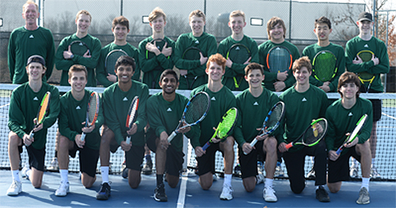
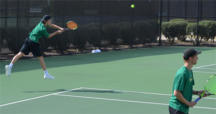
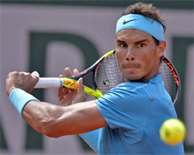
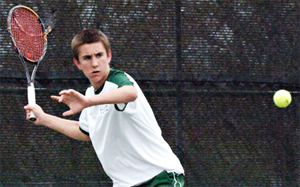

← Bài trước: Statements | 🏠 Mental Game Trang chủ | Bài tiếp: → The 2010 Men's Australian Open Final
Kỹ thuật phát triển tự tin
Thư viện kiến thức quần vợt thống nhất — Cơ bản, Phân tích kỹ thuật, Thư viện tham khảo và nhiều hơn nữa
Kỹ thuật phát triển tự tin
Ben Loeb

Bạn có thể sử dụng cùng một kỹ thuật để xây dựng tự tin như tôi đã làm với các đội vô địch tiểu bang của mình.
Trong bài viết đầu tiên của loạt bài này, tôi đã nói về tầm quan trọng của việc tự chấp nhận vô điều kiện như một trong những nền tảng của sự tự tin thực sự. (Nhấn vào đây.)
Quần vợt mang lại cho bạn cơ hội để học nhiều về bản thân. Nếu bạn có tự tin, bạn cần sử dụng nó một cách hiệu quả. Nếu bạn không có đủ tự tin, bạn cần học những gì bạn có thể làm để trở nên tự tin hơn một cách chân thực.
Để xây dựng thêm tự tin, hãy tập trung nhiều hơn vào việc xây dựng một phiên bản tốt hơn của chính mình. Nếu bạn có thể làm được điều đó, nó sẽ cải thiện cơ hội của bạn để đạt được kết quả mong muốn nhiều hơn.
Bây giờ hãy khám phá một số kỹ thuật cụ thể mà tôi đã sử dụng với các tay vợt ở mọi cấp độ và với các đội vô địch của mình có thể giúp bạn xây dựng phiên bản tốt hơn.
Hình dung thành công
Kỹ thuật đầu tiên là hình dung thành công. Điều này có nghĩa là học cách hình dung mình thành công một cách sống động. Đây là chuỗi đề xuất của tôi, bắt đầu ngay trước khi thi đấu thực sự.
Hình dung bản thân hoặc bạn và đồng đội của mình đi qua các động tác giãn cơ và ấm nóng trước trận đấu. Sau đó hình dung ấm nóng của bạn.

Nói với bản thân rằng bạn sẽ đánh trả giao bóng tuyệt vời khi bạn có điểm phá vỡ.
Bây giờ hình dung cách bạn sẽ trông, cảm thấy và hành động như thế nào ở đầu trận đấu. Hình dung vài điểm đầu tiên, khi bạn đối mặt với bất kỳ sự lo lắng nào và ổn định vào cuộc thi đấu.
Hình dung cách bạn sẽ xử lý các khoảnh khắc quan trọng trong trận đấu, bao gồm cách bạn sẽ kết thúc trận đấu. Hình dung các kịch bản khác nhau về cách bạn sẽ thành công trong những khoảnh khắc đó.
Đối với nhiều tay vợt, việc kết thúc trận đấu có thể khó khăn, đặc biệt nếu họ là người thua kém. Do đó, bạn cần hình dung mình làm điều đó. Nếu bạn có thể nhìn thấy và tin vào thành công của mình, tâm trí của bạn sẽ được thuyết phục rằng nó đang ở trong lãnh thổ quen thuộc trong chính cuộc thi đấu. Tình trạng tâm lý được khởi tạo bởi sự tưởng tượng của bạn theo trình tự này sẽ tạo ra nhiều tự tin hơn theo thời gian.
Lời nói tự tin
Kỹ thuật thứ hai là lời nói tự tin. Tâm trí của bạn thể hiện thành hành động những suy nghĩ bạn dành nhiều thời gian nhất. Hãy làm cho những suy nghĩ đó trở nên tích cực hoặc hướng đến những gì bạn muốn xảy ra, thay vì những gì bạn không muốn xảy ra.
Thay vì nghĩ với bản thân rằng bạn có thể bỏ lỡ một cú đánh dễ dàng, hãy nói với bản thân rằng bạn sẽ đánh trúng. Hình dung bạn sẽ đánh trả giao bóng tuyệt vời khi bạn có điểm phá vỡ. Những suy nghĩ này có thể giúp bạn thi đấu với sự tự tin.
Hình dung tâm lý
Sử dụng hình dung tâm lý bao gồm việc hình dung bản thân đang thực hiện như mong muốn của bạn ngay cả trước khi bạn bước lên sân hoặc sân quần vợt. Càng đào tạo tâm trí của bạn tập trung vào những điều đúng, càng nhiều nó sẽ phản hồi.
Hình dung tâm lý chuẩn bị bạn để thấy cách bạn muốn thực hiện trong cuộc thi đấu, và nó cũng cho phép bạn hình dung cách bạn sẽ xử lý bất kỳ loại thách thức nào. Sử dụng hình dung tâm lý để hình dung bản thân đang thư giãn và trong trạng thái luồng.
Màu xanh lam đại diện cho sự tự tin, dũng cảm và bình tĩnh.
Hình dung màu xanh lam
Hình dung màu xanh lam. Một số tay vợt tìm thấy việc hình dung màu này bên trong một hình vuông hoặc một hình tròn có ích, trong khi những người khác hình dung nó mà không có tham số nào. Màu xanh lam đậm, rực rỡ đại diện cho sự tự tin, dũng cảm và bình tĩnh. Hãy để hình ảnh của màu này giúp bạn tập trung lại vào nhiệm vụ hiện tại từ một tâm trạng vững chắc và bình tĩnh.
Tập trung vào hiện tại
Tập trung vào hiện tại giúp tăng cường sự tự tin vì nó giữ bạn xa khỏi các tình huống "nếu như". "Nếu tôi double fault?" Danh sách các hậu quả tiêu cực tiềm năng và các tình huống "nếu như" trong quần vợt tiếp tục không ngừng.
Nếu bạn tập trung vào hiện tại, bạn sẽ thi đấu trong khoảnh khắc. Khi bạn thi đấu trong khoảnh khắc, bạn có khả năng sẽ thi đấu với nhiều tự tin hơn.
Để đạt được sự tập trung vào quá trình này, bạn phải tập trung vào những điều mà bạn có thể kiểm soát. Một số ví dụ về những điều này bao gồm hiệu quả và cường độ luyện tập, các quy trình, kế hoạch thi đấu, đánh giá kỹ thuật, phản ứng với suy nghĩ và cảm xúc của riêng bạn - ngay cả phản ứng của bạn với những biến động trong sự tự tin của mình.
Tập trung vào những yếu tố này thay vì các yếu tố không thể kiểm soát như thời tiết, những gì người khác nghĩ hoặc nói, hoặc quyết định của huấn luyện viên.

Bạn có nghĩ Rafa tập trung vào quá trình không?
Tập trung cũng vào những gì bạn đang làm đúng. Điều quan trọng là học từ những sai lầm của mình, nhưng đừng dành quá nhiều thời gian suy nghĩ về chúng. Sự tự tin của bạn sẽ giảm nếu bạn dành quá nhiều thời gian suy nghĩ về những sai lầm của mình. Sự tự tin của bạn sẽ tăng lên nếu bạn chủ yếu tập trung vào những gì bạn đang làm đúng.
Tập trung vào quá trình, không phải kết quả. Bằng cách tập trung vào quá trình cải thiện, bạn đang tập trung vào những gì nằm trong khả năng kiểm soát của bạn. Bạn có ảnh hưởng đến kết quả, nhưng không kiểm soát được chúng. Nếu bạn tập trung vào quá trình và vẫn thua, bạn có thể thất vọng, nhưng sự tự tin của bạn không nên dao động nhiều như vậy, và bạn sẽ không bị xúc phạm như bạn sẽ làm nếu bạn tập trung vào kết quả.
Tập trung vào bản thân, không phải người khác. Tập trung vào hiệu suất của riêng bạn và sự cải thiện cá nhân về thể chất, tinh thần và cảm xúc. Tập trung vào những gì bạn cần làm để cải thiện cá nhân hoặc như một đội. Khi bạn đạt được sự cải thiện, sự tự tin của bạn sẽ tăng lên.
Trong việc khám phá "quá trình đúng cho bạn", bạn sẽ nhận ra rằng sự tự tin của bạn sẽ dao động. Do đó, đừng tức giận với bản thân khi sự tự tin của bạn giảm xuống. Tập trung vào những gì bạn cần làm và cách bạn cần nghĩ để đưa sự tự tin của mình trở lại.
Bỏ qua kết quả để đạt được chúng
Trong các môn thể thao cạnh tranh, việc tập trung vào kết quả là rất phổ biến. Một số tay vợt bị ám ảnh bởi kết quả. Chúng tôi tuyệt đối ghét thua, và chúng tôi yêu thắng.
Điều ngược lại là để đạt được kết quả, bạn phải bỏ qua chúng.
Thực tế, một số tay vợt ghét thua hơn họ yêu thắng. Vậy thì những vận động viên và huấn luyện viên nên xử lý một sự ám ảnh với việc thắng khi chúng tôi đang chơi trò chơi?
Jim Taylor, một tâm lý học thể thao được đánh giá cao, đã đưa ra một quan điểm thú vị và hiệu quả về vấn đề này. Taylor đã đề xuất rằng có rất nhiều quan niệm sai lầm về vai trò của kết quả trong việc đạt được mục tiêu thể thao của bạn.
Ông ấy đề xuất rằng bạn cần có kết quả tốt để thành công, nhưng câu hỏi là làm thế nào để đạt được những kết quả đó. Bạn đang tập trung vào những gì trong khi thi đấu? Bạn đang tập trung vào kết quả hay quá trình?
Sự tập trung vào kết quả bao gồm việc tập trung vào kết quả, xếp hạng và đánh bại người khác. Sự tập trung này ưu tiên những thứ nằm ngoài khả năng kiểm soát của vận động viên. Sự tập trung vào quá trình bao gồm việc tập trung vào những gì bạn cần làm để thi đấu tốt nhất, chẳng hạn như cải thiện chuẩn bị trước trận đấu, kỹ thuật, chiến lược hoặc quan điểm tâm lý học. Sự tập trung vào quá trình hoàn toàn tập trung vào bạn.
Không phải bất thường đối với một số vận động viên nghĩ rằng để đạt được kết quả mong muốn, họ cần tập trung vào chúng. Nhưng thực tế là việc tập trung vào kết quả thực sự giảm cơ hội đạt được kết quả mong muốn của bạn.
Nếu bạn tập trung vào kết quả, bạn không tập trung vào những gì bạn cần làm để thi đấu tốt nhất trong khi thi đấu. Điều khiến bạn lo lắng trước một cuộc thi đấu thường là kết quả, không phải quá trình.
Một kết quả xấu như không thắng hoặc đạt được mục tiêu của bạn sẽ làm giảm sự tập trung tối ưu của bạn trong khoảnh khắc và tạo ra căng thẳng không cần thiết. Sự thật là khi một vận động viên tập trung vào kết quả, họ ít có khả năng đạt được kết quả mong muốn hơn.

Tập trung vào quá trình tạo ra chiến thắng, không phải chiến thắng chính nó.
Ngược lại, khi các tay vợt tập trung vào quá trình đạt được kết quả đó thay vì tập trung vào kết quả本身, họ tăng cơ hội đạt được kết quả mong muốn của mình. Quá trình là hướng đến hành động trong khi kết quả là hướng đến kết quả.
Nếu một vận động viên thi đấu tốt, họ có khả năng cao hơn để đạt được kết quả mong muốn. Điều quan trọng là tập trung vào những gì tạo ra chiến thắng và không phải tập trung vào chiến thắng本身.
Ngay cả khi tốt nhất là không nghĩ về việc thắng, thì mong đợi một vận động viên không nghĩ về kết quả gì cả là không thực tế. Do đó, thách thức của bạn là xác định những gì cần làm khi tâm trí của bạn tập trung vào kết quả.
Hãy nhận thức khi bạn đang tập trung vào kết quả. Một khi bạn nhận thức được sự tập trung vào kết quả của mình, hãy nhận ra rằng bạn chỉ có thể tập trung vào một thứ tại một thời điểm. Nếu bạn có thể thay thế sự tập trung vào kết quả bằng sự tập trung vào thứ gì đó khác, bạn có thể ngăn chặn bản thân khỏi nghĩ về kết quả. Lý tưởng nhất, bạn nên tập trung vào thứ gì đó sẽ cho phép bạn thi đấu tốt nhất.
Tại sao bạn thi đấu?
Đó là vì yêu thích sự cạnh tranh, để phát huy tiềm năng của bản thân, trở thành một phần của một đội, hoặc để có được niềm vui? Trả lời câu hỏi này đưa bạn ra khỏi chế độ suy nghĩ và đưa bạn vào chế độ cảm xúc. Điều này tạo ra những cảm xúc mạnh mẽ như hứng thú, cảm hứng và niềm tự hào, sẽ kích thích bạn ra ngoài và thi đấu tốt nhất bạn có thể.
Luyện tập tất cả những kỹ thuật này trên và ngoài sân quần vợt. Hãy làm cho chúng trở thành một phần thường xuyên của cuộc sống quần vợt của bạn. Chúng có tiềm năng chứng minh để giúp bạn đối mặt với bất cứ điều gì xuất hiện trong trận đấu của mình và thi đấu tốt nhất của mình bất kể hoàn cảnh.

Ben Loeb đã là huấn luyện viên quần vợt cấp cao cho các đội nam và nữ của Trường Trung học Rock Bridge ở Columbia, Missouri trong hơn 30 năm. Các đội của anh ấy đã giành được hơn 1000 trận đấu đôi, tham gia 38 lần vào vòng bán kết của giải vô địch đội tiểu bang, và giành được 17 danh hiệu tiểu bang. Anh ấy cũng giảng dạy một lớp tâm lý học thể thao cấp trung học và đã sử dụng các nguyên tắc mà anh ấy đã phát triển để giúp hàng trăm tay vợt vượt qua những thách thức về mặt tinh thần và cảm xúc của việc chơi quần vợt cạnh tranh chiến thắng.

Huấn luyện viên cấp cao!
Sách mới của Ben, Next-Level Coaching, nêu chi tiết các nguyên tắc mà anh ấy đã phát triển trong sự nghiệp của mình như một tay vợt và một huấn luyện viên vô địch để giúp vượt qua những thách thức về mặt tinh thần và cảm xúc của việc chơi và thưởng thức quần vợt cạnh tranh. Nó bao gồm các bảng tự đánh giá chi tiết và các kế hoạch hành động để giúp bất kỳ tay vợt hoặc huấn luyện viên nào sử dụng tâm lý học thể thao để đạt được cấp độ tiếp theo.
Để đặt hàng Next-Level Coaching, Nhấn vào đây!
Nguồn: tennisplayer.net lưu trữ — Kỹ thuật phát triển tự tin.docx (Thư viện giảng dạy của John Yandell, 2002-2022). Được trích xuất và hiển thị dưới dạng HTML cho Tennis Future Lab.